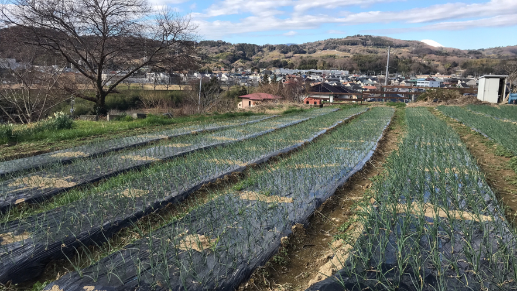
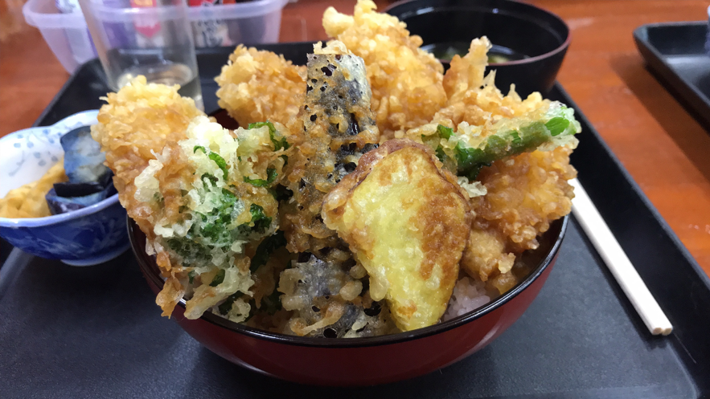
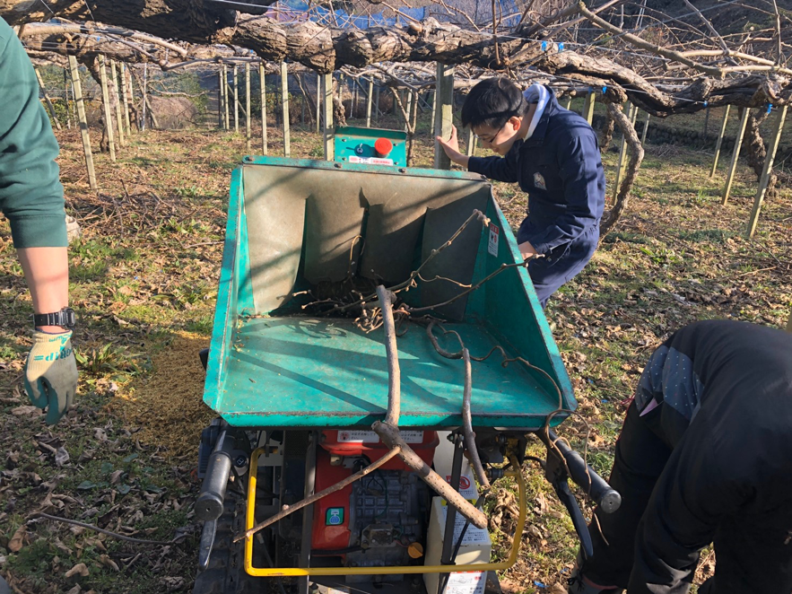
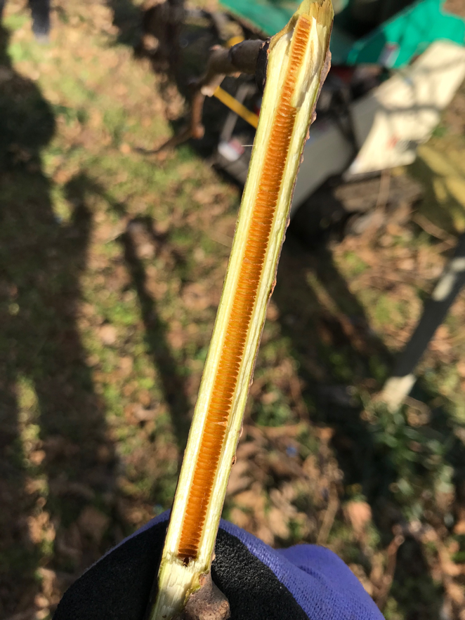
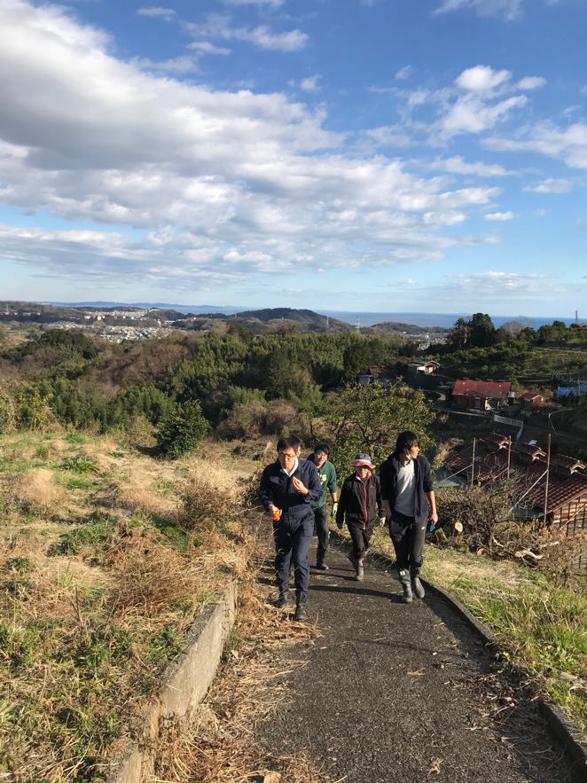

ブログ再開します【2020年2月禅龍寺農園訪問】
2020.02.13 吉田
こんにちは、来週の北欧旅行が楽しみな運営メンバーのよっすーです。
諸事情によりホームページを停止していたのですが、その再開と同時にブログの更新頻度も上げようということになりました。(続きますように)
さて、今回は2月の農園訪問の報告をします！
----------------------------------------------------
場所：神奈川県小田原市
日付：2020年2月1日(土)
内容：
①畑の管理＠禅龍寺農園
②農家さんのお手伝い＠あきさわ園
----------------------------------------------------

いいお天気に恵まれて絶好の農作業日和！
午前中は禅龍寺農園で雑草抜きと畑の周りの片付けをしました。
地道な草抜きはかなり疲れましたが、隣の畑のお母さんが貸して下さった草取り鎌のおかげで作業効率がUP。
ありがとうございます(^^)
12月上旬に定植した下中玉ねぎは、今年も順調に育っていて一安心です。
草取りの傍、昨年10月末の合宿で収穫したサツマイモの残りを畑のかまどで焼き芋にしたのですが、これがなかなか美味しかったです。（写真を撮るのを忘れました…）
お昼ごはんは、禅龍寺農園の近くにあるナマズが食べられる食堂で「なまず丼」をいただきました。

ボリューム満点で、食べきれなかった女子勢はお持ち帰り。
午後はいつもお世話になっている、秋澤さんの畑へ。
山の上のキウイ畑での作業だったのですが、到着すると見覚えのある顔が…
なんと、OBのお二人が偶然同じ日にお手伝いに来ていてびっくり。笑

ここでは、剪定で切り落とした枝を拾い集め、それを機械に入れてウッドチップにするという作業をしました。
単調な作業ではありますが、重たい機械を移動させながら次々と枝を入れていくので、少人数でやるのは大変そうです。

ちなみに、キウイの枝の中がこうなっているって知っていましたか？
（理由は分かりません。調べておきます。笑）

作業後は、山の更に高いところまで登り、海まで見える綺麗な景色を堪能しました。
秋澤さんにみかんのお土産をたくさん頂き、今回は少し早めに帰路に就きました。
珍しく（？）予定時刻通りに行動できた一日でしたね。
参加したメンバーはお疲れ様でした！
よっすー
P.S.トレッキング部発足！初回活動日は2/15(土)です。